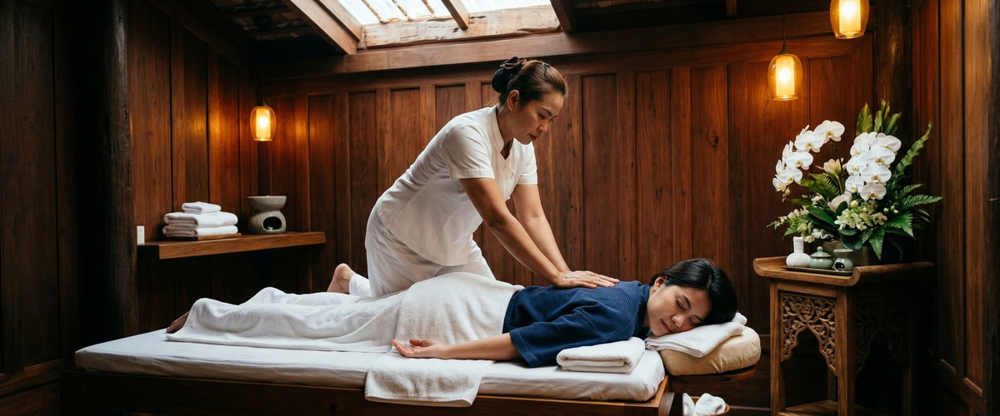
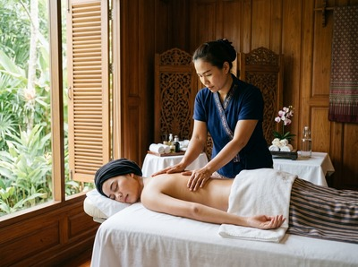

★★★★★ Quality gate failures: readability. Review and edit before removing this notice. ★★★★★
Orchid Wellbeing Glasgow attracts genuine interest.

The studio positions itself around authentic Thai massage, a central location, and a calm treatment environment — and for many people searching for Thai massage in Glasgow, it comes up early in results. That is a reasonable starting point for any search.
If you are still looking, you are likely noticing what is missing from Orchid's website: no pricing is displayed, no therapist qualifications or backgrounds are listed, and the testimonials offer little more than a name. Those gaps make it difficult to book with confidence, particularly for a first visit.

Serendipity Massage Therapy & Wellness is a professional team practice on Hope Street in Glasgow city centre. The techniques used in every treatment were developed by head therapist Jariya Malone. Every therapist on the team is trained to the same standard.
That matters. You are not relying on a single person, and you are not taking a chance on who is free. Pricing is listed clearly before you commit to anything.
The full menu covers traditional Thai massage, Thai oil massage, hot stone massage, Swedish massage, aromatherapy, and sports massage. Online booking is open at any time. Book your session at serendipitymassage.co.uk/book-now.
Orchid Wellbeing does not display pricing on its website. Serendipity lists all session prices before you book, so there are no surprises when you arrive.
Orchid's website gives no detail on therapist training. Serendipity's treatments are built on a method developed by Jariya Malone. Every therapist is trained to deliver it to the same standard.
Orchid does offer online booking, which puts it ahead of some rivals. Its central location is also useful for many visitors. If Orchid's location suits your route, that is worth factoring in. For anyone coming from the financial district, Blythswood Square, or Buchanan Street, Serendipity on Hope Street is just as easy to reach.
Serendipity works well for office workers based around St Vincent Street, Blythswood Square, and the financial district. It suits anyone who wants a reliable lunchtime or after-work session with a team they can return to.
It also suits people who want to know what they are booking before they arrive. Treatment details, clear pricing, and therapist information are all on the website before you make contact.
Orchid Wellbeing Glasgow is in the central Glasgow area. From there, Serendipity on Hope Street is a short walk through the city centre.
Head west along Bath Street or Sauchiehall Street, then turn south onto Hope Street. Central Chambers is at number 93. Serendipity is on the first floor in Suite 50. The walk takes around five to ten minutes. Glasgow's grid layout makes it easy to navigate.
Get driving directions to Serendipity Massage Therapy & Wellness:
Serendipity Massage Therapy & Wellness — Floor 1, Suite 50, Central Chambers, 93 Hope Street, Glasgow G2 6LD
Book your session today at serendipitymassage.co.uk/book-now. No phone call needed — choose your treatment, pick a time, and confirm your appointment in a few clicks.
Yes. Serendipity offers online booking through its website at any time. You can browse the full treatment menu, pick a session length, and confirm your appointment without needing to call. The booking page is at serendipitymassage.co.uk/book-now.
Serendipity's treatments are built on a method developed by head therapist Jariya Malone. Every therapist on the team is trained to deliver it to the same standard. Orchid Wellbeing's website gives no detail on therapist training or qualifications. A direct comparison is not possible from public information.
Serendipity is at Floor 1, Suite 50, Central Chambers, 93 Hope Street, Glasgow G2 6LD. Hope Street sits at the heart of Glasgow's financial district. It is within easy walking distance of Buchanan Street subway station and the offices around Blythswood Square and St Vincent Street.
The full menu includes traditional Thai massage, Thai oil massage, Thai aromatherapy massage, Thai head massage, Thai facial massage, Thai foot massage, hot stone massage, Swedish massage, and sports massage. Couples treatments are also available. Each treatment uses techniques developed and taught in-house.
Yes. Serendipity shows all prices on its website before you commit to a booking. Orchid Wellbeing does not list pricing online. You cannot compare costs without making direct contact with them. At Serendipity, you can see what each session costs before you book.
Serendipity's credibility rests on its team training model. Every therapist works to a consistent standard built around techniques developed by head therapist Jariya Malone. The studio serves long-term clients across Glasgow's professional and residential communities. Specific claims on this page are based only on public business information and competitor website data.
Ready to book? Book your appointment online at serendipitymassage.co.uk/book-now.